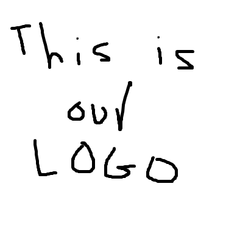

<!--
  Generated template for the HostGuestPage page.

  See http://ionicframework.com/docs/components/#navigation for more info on
  Ionic pages and navigation.
-->
<ion-content padding class="background">
  <ion-grid>
    <ion-col>
      <ion-row>
        
      </ion-row>
      <ion-row>
        <button ion-button block (click)="makeRoomAndEnter();" class="button">Host</button>
      </ion-row>
      <ion-row>
        <button ion-button block [navPush]="GuestButton" class="button">Guest</button>
      </ion-row>
    </ion-col>
  </ion-grid>
</ion-content>
